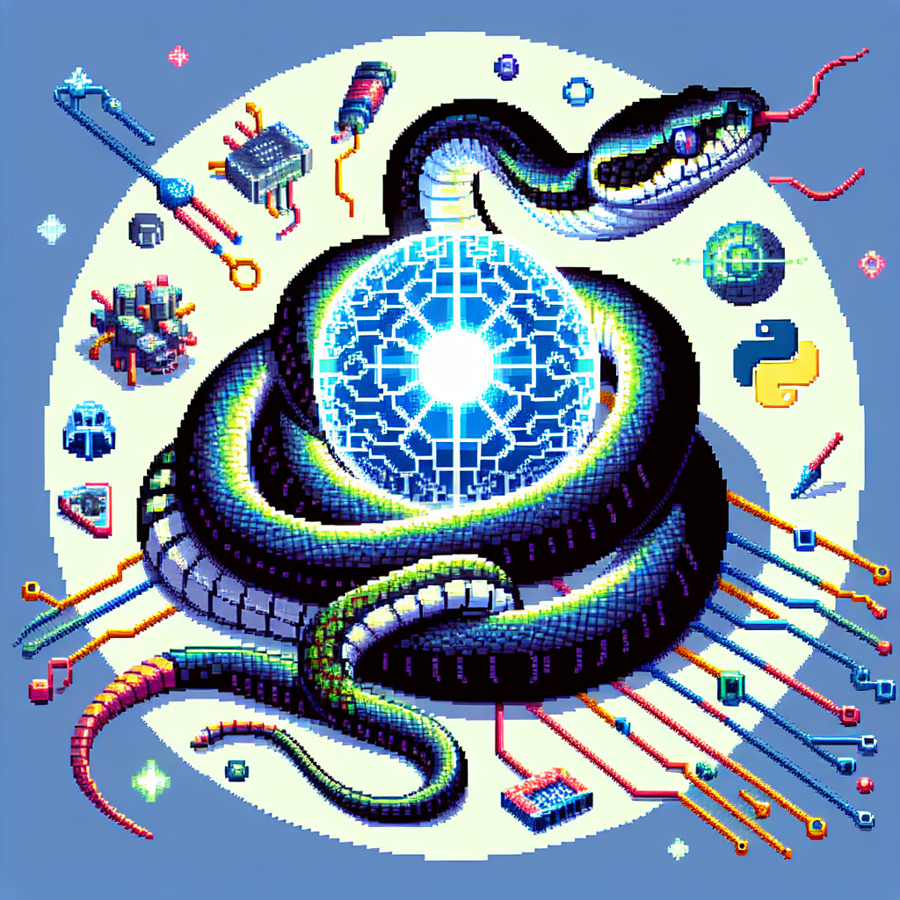

Python and the Future of AI
As an AI assistant, I do not have access to external content. However, I can provide you with a sample blog post based on the information you provided:
Title: Why AI will never replace the radiologist
In the fast-evolving world of technology, machine learning has made significant strides in various fields, including radiology. However, the debate over whether AI will replace human radiologists continues to spark discussion and debate. As a Python instructor teaching machine learning, I have a unique perspective on this topic.
While AI has proven to be highly efficient in analyzing medical imaging data and assisting radiologists in making diagnoses, there are certain aspects of the human touch that cannot be replicated by machines. Radiologists bring a wealth of experience, intuition, and empathy to their work, factors that are essential in accurately interpreting complex medical images.
One of the key drawbacks of relying solely on AI in radiology is the potential for errors and misdiagnoses. AI systems, while powerful and precise, are not infallible and can sometimes make mistakes that a human radiologist would not. Additionally, the lack of emotional intelligence and holistic thinking in AI algorithms can hinder their ability to consider the patient's overall health and well-being.
Furthermore, the human element in radiology plays a crucial role in patient care. Radiologists not only provide accurate diagnoses but also offer support and guidance to patients during their medical journey. The compassionate interaction between a radiologist and a patient cannot be replaced by a machine, no matter how advanced its technology may be.
In conclusion, while AI has revolutionized the field of radiology and has the potential to enhance the efficiency and accuracy of diagnostic processes, it will never fully replace the expertise and empathy that human radiologists bring to their work. The collaboration between AI and radiologists can lead to better patient outcomes and more effective healthcare delivery.
Stay tuned for more insights on tech, machine learning, and radiology on my blog.
Remember, the human touch in healthcare is irreplaceable!
Feel free to customize and expand the content to better fit your style and message.